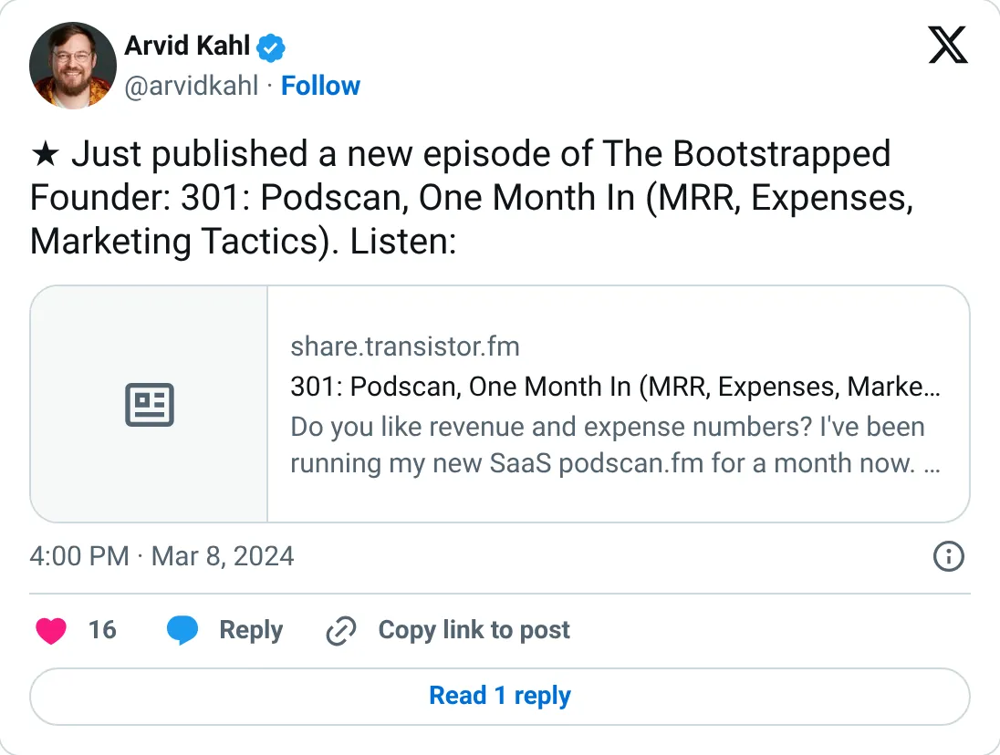
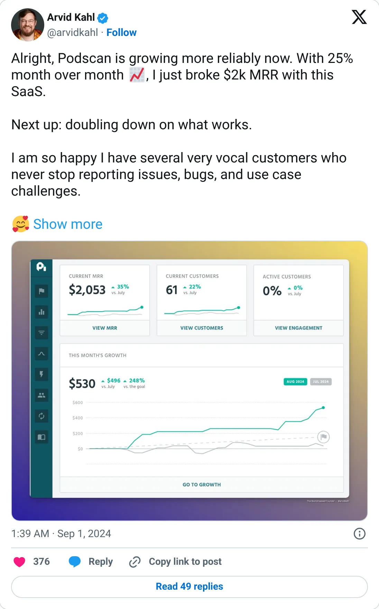

Not a pick
Podscan
A real-looking company with a headline you should not plan against.
$2K MRR (Aug 2024)
Should you build this
The company may be real. The figure on the card is a peak, a stale year, a cash month, or an average. Podscan's public trail is three modest posts: $500 MRR, $1K after two months, $2K and +25% month over month in August 2024. Nobody pumps a valuation with $2K. The problem is only time. There is no figure after that, so the rank treats a two-year-old early MRR as current. Small, probably real when posted, and stale.
Cited from the captured posts, shown below: the earliest captured post (Mar 8, 2024); the latest milestone (Sep 1, 2024) is the source for “Broke $2K MRR, +25% MoM”.
Posts this is based on

Open on X

Broke $2K MRR, +25% MoM
Open on X
What the product is
Podcast monitoring and database: transcribes podcasts in near-real time so brands and agencies can track mentions.
⚠ Thin and older: no public figure after Aug 2024 found on X.